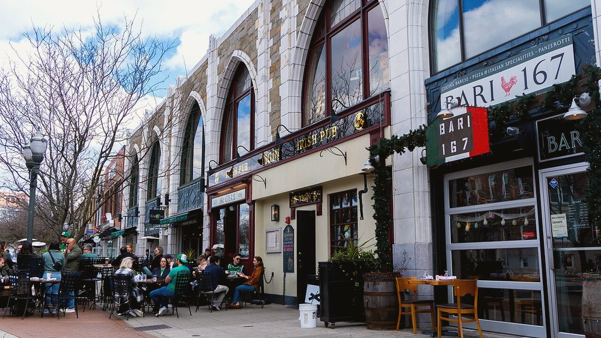
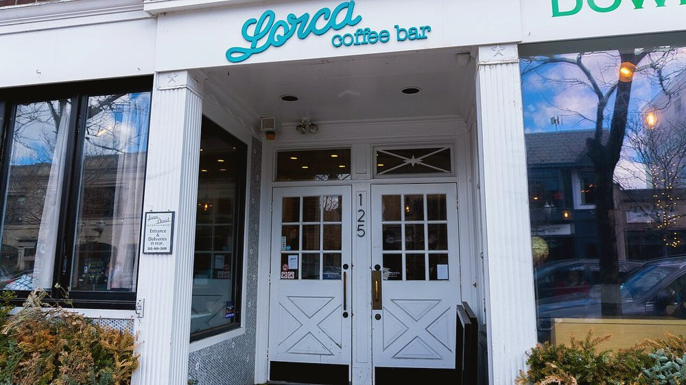
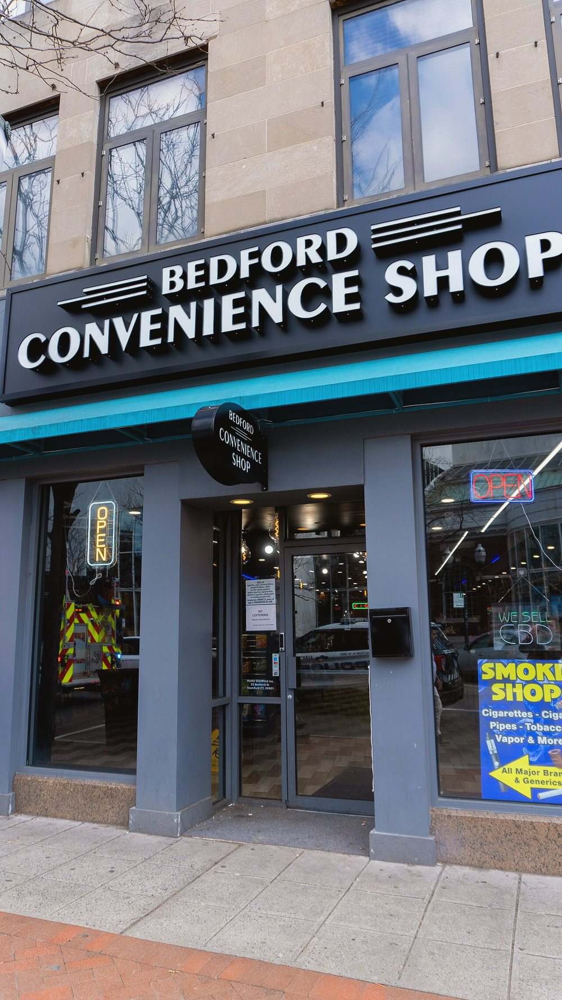
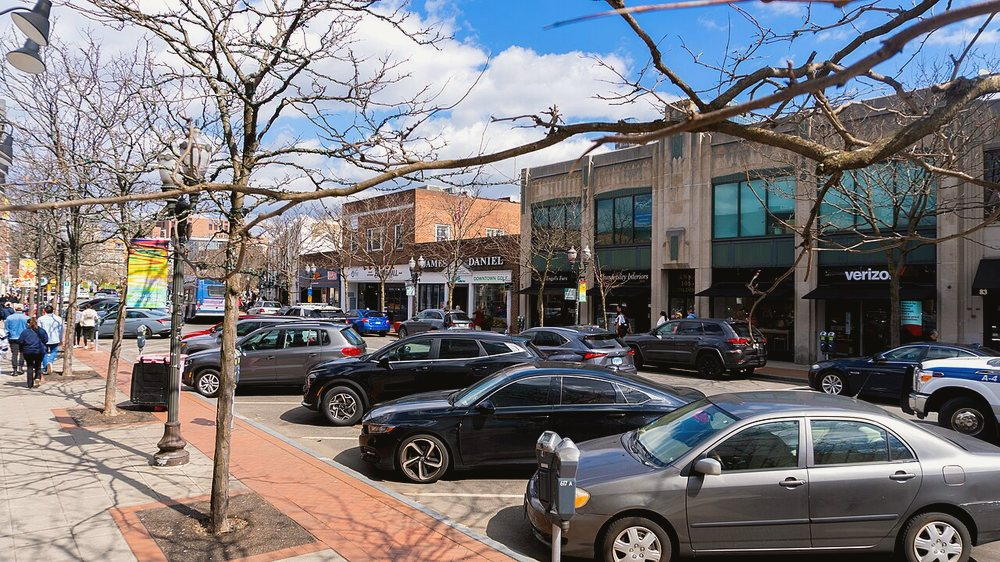
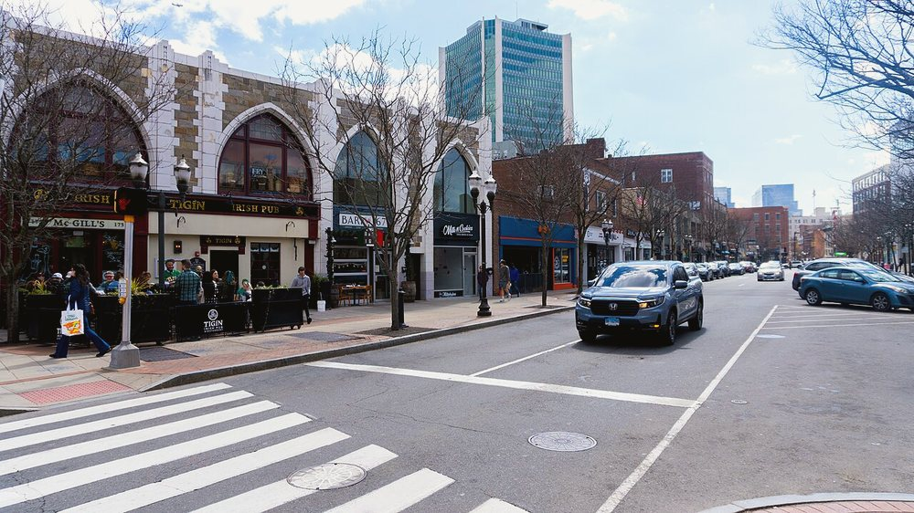
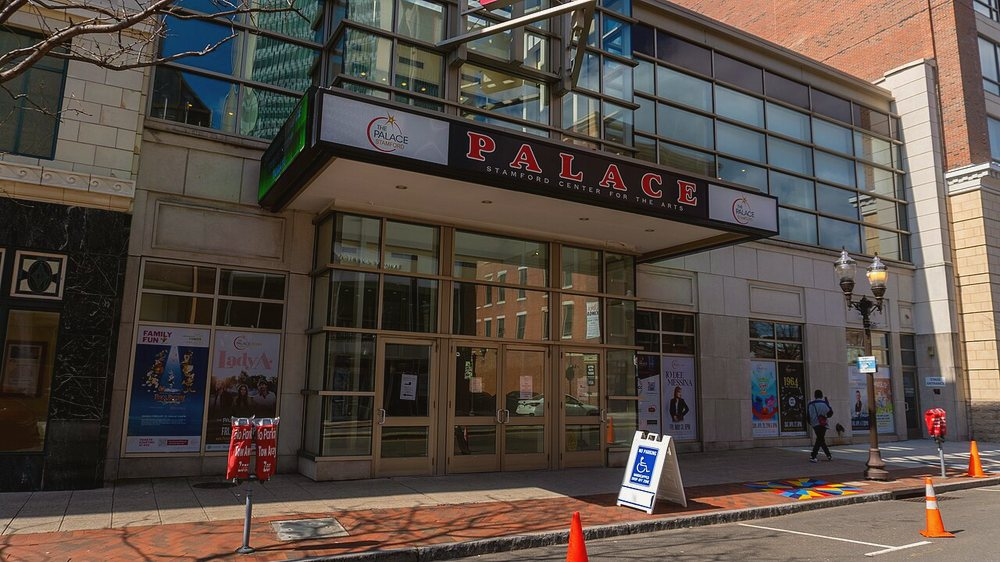
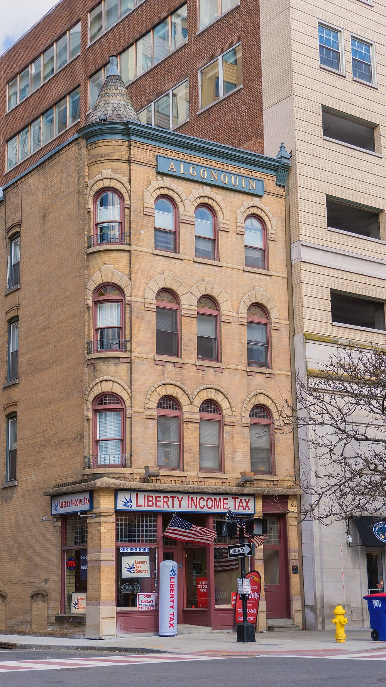
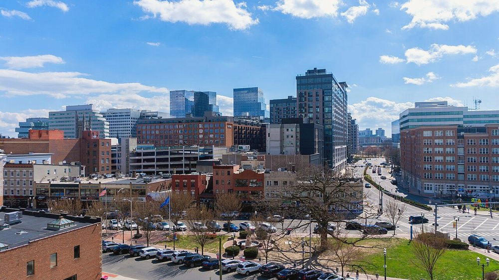
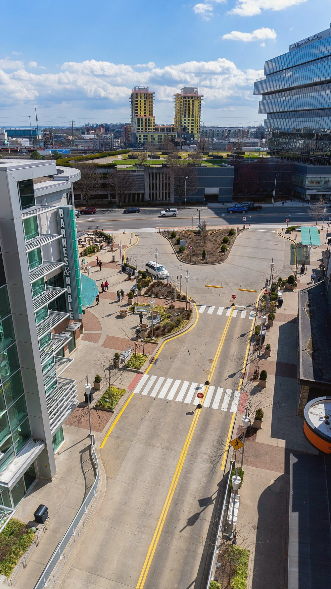

Stamford CT Housing Market 2026
Where prices, inventory & rates stand
Stamford Neighborhoods, Block by Block
An honest read on every neighborhood

Living in Stamford, CT
Commute, cost, and lifestyle

Homes for Sale in Stamford
See new MLS listings first

Pre-Offer Inspections in Stamford
Win without overpaying

Renting vs. Buying in Stamford
Run the real numbers

Stamford vs. Greenwich: Where to Buy
Price, commute & vibe compared

First-Time Buyer Programs in Stamford
Down-payment help that exists
Moving from NYC to Stamford
What actually changes

The Best Time to Sell in Stamford
Timing the local market

Fourth of July in Stamford
Fireworks & the waterfront
Moving to Stamford — What Reddit Says
The unfiltered local take

Is Stamford a Good Place to Live?
The crowd-sourced verdict

23 Stamford Eateries and Institutions Cited for Serious Health Code Violations in May 2026
A recent wave of health code inspections in Stamford has revealed serious safety concerns across 23 food-serving establishments, including five school
Melrose Place Zoning Change Finalized After Appeal Fails
The Stamford Zoning Board has officially upheld the June 2026 rezoning of properties on Melrose Place in the Waterside neighborhood, rejecting a petit
23 Stamford Eateries and Schools Cited for Health Code Violations in May 2026
A recent wave of health inspections in Stamford has revealed serious sanitation and safety lapses across 23 food service operations, including five sc

23 Stamford Food Establishments Cited for Health Violations in May — What It Means for Local Residents
In May 2026, 23 food-related establishments across Stamford—including five schools, a nursing home, and multiple restaurants—were cited for serious he
Stamford Nonprofits Receive Grants to Expand Youth Mental Health and Food Access Programs
Two Stamford-based nonprofits have received funding from the New Canaan Community Foundation to strengthen critical services in youth mental health an
Stamford’s New Building Rules Mandate Solar Panels and Green Roofs
Stamford homeowners, renters, and real estate buyers should take note: the city has officially adopted new building regulations requiring solar panels
As Antisemitic Incidents Rise, Stamford Sees Increased Focus on Safety Training
A growing number of antisemitic incidents in Connecticut, including in Stamford, are prompting Jewish community leaders and former law enforcement to
Bears Entering Homes in Stamford: What Residents Need to Know
A growing number of black bears are entering homes in Stamford and across Connecticut, prompting concern from state wildlife officials and residents a
Bears in Stamford: Rising Sightings Signal Shift in Local Wildlife Dynamics
Stamford residents are seeing more black bears than ever before, with increasing reports of bears entering homes and foraging in suburban neighborhood
Stamford’s Green Building Vote Looms as Residents Push for Sustainable Development
Stamford residents are watching closely as the city’s Zoning Board prepares to vote on sweeping new sustainability rules that could reshape how new bu
Stamford’s July 4 Fireworks Bring Major Traffic and Parking Changes — What Renters and Buyers Should Know
The City of Stamford’s annual Fourth of July fireworks display at Cummings Beach on Thursday, July 2, 2026, will bring significant traffic and parking
CT Supreme Court Upholds Conviction of Former Stamford DCC Chairman
A recent decision by the Connecticut Supreme Court has confirmed the criminal conviction of a former Stamford Development Corporation (DCC) chairman,
Historic Gardener’s Cottage on DeBera Lane May Be Preserved Amid New Housing Proposal
A small but historically significant structure in Stamford’s East Side could be saved and integrated into a new residential development, offering a ra
Melrose Place Zoning Decision Finalizes Industrial Shift in Waterside
A recent legal challenge to the rezoning of properties on Melrose Place in Stamford has failed, confirming a shift from residential to commercial and
New Ownership and Name for Urby Building Signals Downtown Stamford’s Evolving Real Estate Landscape
The Urby building in downtown Stamford has changed hands, with new ownership acquiring the property for $221 million. The transaction marks a signific

Construction Closures in Downtown Stamford This Monday
Stamford residents and visitors are advised to plan ahead as downtown roads will be temporarily closed for necessary construction work starting Monday

fairfield county commercial real estate reports
Takeaway: Quarterly office sector reports provide critical data for decision-making in Fairfield County's real estate market. - Reports offer quarterl

Proposal for Housing Units on Derelict Tennis Club Grounds
A local initiative is underway to revitalize a neglected tennis club property in North Stamford. The proposal aims to transform the dilapidated ground

Stamford Students to Ride More Comfortable School Buses
The Stamford Board of Education is excited to announce a new contract for school bus services. The incoming provider promises an upgrade with 160 air-

fairfield county apartment vacancy rates
Takeaway: Class A and B apartments in Fairfield County show reduced vacancy rates, reflecting strong rental market performance. - Vacancy rates for Cl

Could Unused Office Spaces Be Converted to Housing in Stamford?
Stamford residents and business owners are discussing a potential solution for affordable housing by converting empty office buildings. As more compan

rental market trends in fairfield ct
Takeaway: average one-bedroom rent prices and rental statistics in Fairfield, CT provide insights into the current market conditions. - Average rent f

Sidewalk Sales and Parking Perks at Dogwood
This July, Dogwood Park in Downtown Stamford is hosting a community event with sidewalk sales featuring easy and free parking. Shop till you drop with

Join the Fun at SoundWaters' 10th Anniversary Flotilla Event
Stamford's SoundWaters is inviting all community members to celebrate its 10-year milestone with a special flotilla event along Long Island Sound. Thi

Stamford Fire Truck Involved in Merritt Parkway Crash
A recent incident on the Merritt Parkway has brought attention to the unexpected challenges faced by emergency services. A Stamford fire truck was inv

Urby Building in Downtown Stamford Transitions with New Ownership and Name
The Urby building, a prominent landmark in downtown Stamford's skyline, has undergone significant changes recently. The property has been sold to new

90 School Buses from Greenwich Rolling into Stamford
Stamford residents and curious commuters have spotted an unusual sight on the city's roads—approximately 90 school buses making their way to a central

Stamford Jewish Community Focuses on Safety Training Amid Rising Anti-Semitic Incidents
The Stamford Jewish community is taking proactive steps to address the growing concern of anti-Semitic incidents in Connecticut. Local Jewish leaders

average rent in fairfield county ct
Takeaway: The average rent and housing market insights for Fairfield County, CT are provided. - Average rent prices detailed by city, zip code, and me

stamford downtown development overview
Takeaway: Stamford's downtown is seeing significant growth with new residential and retail developments. - Two major mixed-use developments are underw

downtown stamford housing market trends
Takeaway: Downtown Stamford's real estate saw a modest 4% growth in the past year with average home values around $357K. - Housing prices in downtown

job market downturn in fairfield county
Takeaway: Fairfield County's job market contracted despite national trends showing slower but positive growth. - Job losses were reported in Fairfield

Empty Stamford Offices Get New Life as Housing Solutions
As Stamford grapples with the challenge of finding suitable housing options, a new initiative is gaining traction. The idea revolves around repurposin

Global Jewish Educators Convene in Stamford This Summer
This summer, Stamford is set to become a hub of international dialogue and education as it hosts Jewish educators from around the globe. The event, sc
Greenwich School Buses Make Unusual Trip to Downtown Stamford
Residents of downtown Stamford may have noticed a large number of school buses from Greenwich recently visiting the area. According to recent reports,

Explore This Beautiful Colonial Home Listed at $2.5 Million
Stamford residents have something exciting to look forward to as a modern colonial home has recently hit the market, priced at $2.5 million according

Housing Plans Proposed for Former Tennis Club Site in North Stamford
Local developers have submitted plans to transform the abandoned tennis club site in North stamford into a residential area. The proposal involves sub

stamford ct new construction homes
Takeaway: Trulia lists 519 new construction homes for sale in Stamford, CT. - Provides potential buyers with photos, floor plans, and neighborhood inf

Explore Stamford's Upcoming Psychic, Spiritual & Healing Fair
Stamford residents are in for a treat this summer as the city hosts an exciting Psychic, Spiritual & Healing Fair. This event promises to be a unique

Perna Lane Sewer Project Nears Completion
The Perna Lane sewer improvement project in Stamford continues its steady progress and is on track to conclude this year. This initiative aims to enha
Stamford Considers Transforming Unused Offices into Affordable Housing
Local officials in Downtown Stamford are exploring innovative ways to address the city's growing need for affordable housing. One proposed solution in

Zoning Board Upholds Changes for Waterside Neighborhood
The Stamford Zoning Board recently denied a request to reverse recent zoning changes affecting several properties in the Waterside neighborhood, inclu

Assistant Principals Shuffle Across Stamford Schools
This summer has brought changes to the leadership landscape in Stamford’s educational system, as several assistant principals have been reassigned acr

SoundWaters Marks Decade of Environmental Advocacy with Flotilla
This weekend, Stamford's SoundWaters is hosting its 10th Annual Flotilla event. The celebration will bring together paddlers and community members to

stamford ct real estate trends overview
Takeaway: Stamford CT's median home prices increased slightly to between $712K and $722K in 2026. - Median home prices range from $712K to $722K - Sli

Discover a Modern Colonial Home in Stamford, CT
A beautiful modern colonial home is now on the market in Stamford, offering an exceptional living space for those seeking both style and comfort. This

Stamford Police Arrest Individual for Illegal Firearms Possession
Recently, the Stamford Police Department conducted a successful raid that led to the arrest of a local resident. A 20-year-old man was taken into cust

Stamford's Fourth of July Fireworks Celebration at Cummings Beach
On a recent evening, Stamford residents gathered at Cummings Beach to celebrate the nation’s independence with a dazzling fireworks display. The water

Stamford Schools See New Leadership with Assistant Principal Shifts
Several Stamford Public Schools are experiencing a period of transition as internal management positions change hands. Among the affected schools are

Summer Events Calendar Unveiled in Stamford
As summer approaches, downtown Stamford gears up with a lineup of exciting events to keep residents entertained. The Psychic, Spiritual & Healing Fair

Summer in the Park Returns with Exciting Concerts
Stamford's beloved Summer in the Park event is back this summer, offering a lineup of big-name concerts and cultural festivals. Music lovers can look
Stamford's Urby Building Gets New Owners, Name in $221M Deal
The Urby building located in downtown Stamford has undergone a significant change with the acquisition of new owners and a rebranding effort. This sub
Urby Building in Downtown Stamford Transforms Hands, Rebrands
Downtown Stamford recently witnessed a major shift with the Urby building changing hands and adopting a new identity following its sale. This substant

Water Main Break on High Ridge Road Repaired
Residents of High Ridge Road in Stamford breathed a sigh of relief as emergency services successfully repaired the water main break that had caused si
No posts in this category yet.